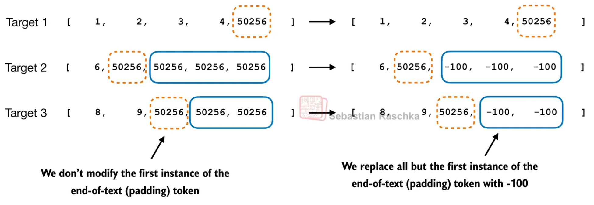
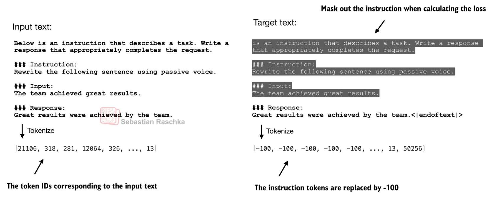

16. 지시학습과 손실 마스킹
SFT는 지시와 응답 예시로 이미 학습된 모델을 추가 학습하는 감독 미세튜닝이다. 이 장의 목적은 무엇을 입력으로 보여 주고 어떤 정답 위치만 손실에 넣는지 직접 결정하는 것이다. 지시는 입력 문맥으로 남겨도 지시 자체의 예측 오차는 제외할 수 있다.
선행 배경은 토큰 ID, next-token 예측, CE다. 토큰 ID는 어휘 항목 번호이고 next-token 예측은 앞 토큰으로 다음 토큰을 맞히는 일이다. CE는 정답 확률 p의 -ln(p)로, 정답을 낮게 예측할수록 커진다. 모두 자연로그를 쓴다. 이 장을 마치면 직렬화→토큰화→padding→shift→loss mask를 수행하고 유효 토큰 수로 평균을 계산할 수 있어야 한다.
기본 경로는 1~3절의 위치 표와 계산이다. 4절에서 배치 가중 방식과 빈 마스크 예외를 확인하고 5절 문제를 푼다. 원문195~204쪽의 각 페이지 해설은 마지막 대응 목록에 있다.
1. 템플릿은 입력 구조를 일정하게 만든다
데이터의 instruction, 선택적 input, response를 일관된 텍스트나 역할 구분 토큰으로 직렬화한다. 토큰 경계를 알려주는 템플릿은 모델이 어디서 답해야 하는지 배우도록 돕는다. 템플릿을 바꿀 수는 있지만 학습 때와 생성 때의 구조가 크게 다르면 동작이 달라질 수 있다. 원문 197~199쪽의 예는 한 가지 형식이며 모든 모델의 고정 규격이 아니다.
자동 생성한 예시도 정답성·중복·개인정보·실제 작업 적합성을 검토해야 한다. 응답이 길다고 무조건 좋은 학습 예시는 아니다. train/validation 분리 역시 필요하다.
2. 입력에는 남겨도 loss에서는 뺄 수 있다
설명용 ID에서 P0=10,P1=11은 prompt, R0=20,R1=21은 response, EOS=2는 종료, PAD=0은 채움이다. 어휘의 실제 표준 번호가 아니다. next-token 정답은 입력을 한 칸 이동시켜 만든다.
| 위치 | 모델 입력 X | 다음 토큰 정답 Y | 응답만 학습하는 labels |
|---|---|---|---|
| 0 | P0=10 | P1=11 | -100 |
| 1 | P1=11 | R0=20 | 20 |
| 2 | R0=20 | R1=21 | 21 |
| 3 | R1=21 | EOS=2 | 2 |
| 4 | EOS=2 | PAD=0 | -100 |
-100은 이 예에서 loss가 무시하도록 정한 sentinel이며 토큰 ID가 아니다. 응답 첫 토큰 R0의 손실은 마지막 prompt 입력 위치의 출력에서 계산한다. 토큰 위치와 정답 위치를 섞지 않아야 한다. prompt는 모델 입력에 남아 문맥을 제공한다. prompt loss를 제외하는 것은 prompt를 Attention에서 가린다는 뜻이 아니다.
실제 EOS는 예측할 대상이고, 배치 길이를 맞추기 위해 덧붙인 PAD는 보통 loss에서 제외한다. EOS와 PAD가 같은 ID를 공유하는 구현은 값만으로 구별하지 말고 유효 길이나 위치 mask를 이용한다. 전 위치 labels가 무시되면 평균낼 유효 토큰이 없으므로 해당 샘플·배치를 처리하는 규칙이 필요하다. 내부 shift를 하는 API에는 위 X/Y를 중복 shift해 전달하지 않는다.
3. 마스크 세 종류의 질문은 다르다
| 마스크 | 묻는 질문 | 적용 대상 |
|---|---|---|
| causal mask | 미래 위치를 볼 수 있는가? | Attention 점수 |
| padding attention mask | 채움 위치를 읽을 수 있는가? | Attention 참조 |
| loss mask | 이 정답 위치를 평균 손실에 포함하는가? | labels·손실 집계 |
응답만 학습하는 SFT에서 위 표의 유효 정답 확률을 (0.5,0.25,0.8)이라고 놓으면 음의 로그값은 (0.693147,1.386294,0.223144), 평균은 약 0.767528이다. 분모는 입력 길이 5가 아니라 유효 응답·종료 정답 3개다. prompt를 포함해 loss를 계산하는 학습 설계도 가능하므로 응답만 학습하는 것이 정의상 필수는 아니다.
4. 전처리 계약과 평균의 분모
원문198쪽의 ‘데이터 생성’은 새로운 지시의 합성이 아니라 이미 있는 instruction/input/output을 학습 텐서로 바꾸는 과정이다. 예를 들어 instruction=단위를 바꿔라, input=45km, output=45000m라는 필드를 정해진 경계 문자열로 연결하고 토큰화한다. 같은 지시를 추론할 때는 output 정답을 붙이지 않는다. 원문197쪽의 Alpaca와 Phi-3 형식은 서로 다른 예시이며 실제 모델의 대화 템플릿에 맞춰야 한다.
어떤 50256은 남고 어떤 것은 -100이 되는지 살펴보자.

왼쪽의 주황 점선은 실제 종료 예측이고 파란 테두리는 채움이다. 오른쪽에서 후자만 -100이 된다. 원문 세 행의 유효 정답 수는 5,2,3개로 총10개다. ID값이 같다는 이유만으로 실제 종료까지 전부 지우면 모델이 종료를 배울 신호가 사라진다. 이 규칙은 실제 종료 뒤 같은 ID를 반복해 채운 예시에 적용한다.
instruction masking은 입력 삭제와 다르다. 양쪽의 회색 부분과 남아 있는 응답을 비교하자.

왼쪽 instruction은 모델이 읽을 문맥이다. 오른쪽 회색 영역은 손실에 포함하지 않는 정답이다. 표2절처럼 labels의 첫 응답 토큰은 마지막 prompt 입력의 출력에 대응한다. 문자 경계가 tokenizer의 토큰 경계와 다를 수 있으므로 실제 직렬화된 토큰열에서 응답 시작을 확인한다. truncation으로 응답이 모두 사라지면 유효 loss token도0이 될 수 있다.
응답 전용 CE의 식은 L=Σ_(b,t) m_bt[-ln p_bt(y_bt)] / Σ_(b,t) m_bt다. m은 포함1/제외0, b는 배치 사례, t는 shift 후 정답 위치다. ignore sentinel을 확률배열 index로 먼저 조회하지 말고 유효 위치만 선택한다. 유효 토큰 수가0이면 이 평균은 정의되지 않으므로 샘플 제외·오류 처리 등 명시 규칙을 둔다.
교육용 비교: A의 유효 토큰2개·각 손실1, B의 유효 토큰4개·각 손실2라면 토큰 평균은(2+8)/6=1.666667이다. 샘플별 평균을 먼저 낸 뒤 평균하면(1+2)/2=1.5다. 긴 응답을 더 많이 반영할지 문장마다 같은 비중을 줄지에 따라 목적이 달라진다. ‘평균’만 적지 말고 분모를 밝혀야 한다. 가중 CE나 분산학습의 집계 방식은 추가 설계 사항이며 이 식은 비가중 유효 토큰 평균이다.
공식 근거: PyTorch CrossEntropyLoss의 ignore_index는 지정 target을 무시하고 비가중 mean에서 무시하지 않은 target을 기준으로 평균낸다. 실제 실행 API의 shift 위치와 mask 규약은 그 구현 문서를 확인한다. CrossEntropyLoss 공식 문서
5. 확인 질문과 해설
- P0,P1,R0,R1,EOS,PAD에서 응답만 학습하면 정답 labels는 무엇인가?
- 확률0.5,0.25,0.8의 응답·종료 손실을 padding 포함5로 나누면 왜 틀리는가?
- 모든 labels가 -100인 배치의 평균을0이라고 정해도 되는가?
- prompt를 loss에서 가리면 attention에서도 가려야 하는가?
해설
- 입력을 앞5개로 잡는 외부 shift 예에서는 [-100,R0,R1,EOS,-100]이다. R0는 마지막 prompt 위치의 출력이 맞힐 정답이다.
- 제외 위치는 합과 분모 양쪽에서 빠져야 한다. 올바른 평균은2.302585/3=0.767528이다. 5로 나누면0.460517로 잘못 작아진다.
- 수학적으로0/0이라 정의되지 않는다. 학습 파이프라인에서 사전에 제외하거나 명시적으로 처리해야 하며 조용히 정상 데이터로 간주하지 않는다.
- 아니다. 지시는 응답에 필요한 문맥이다. causal·padding attention mask와 loss mask는 다른 질문에 답한다.
204쪽 내부 활동에는 padding 길이를 바꾸는 추가 실험이 있다. 예상 손실은 변하지 않는다. 원 노트북 전체 실행이나 새 독자의 수행을 확인했다는 뜻은 아니다. 다음 17장은 한 정답 응답의 모방에서 두 응답의 상대 선호로 넘어간다.